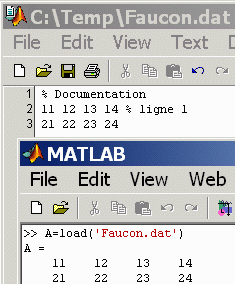
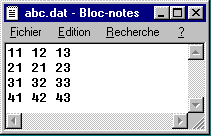
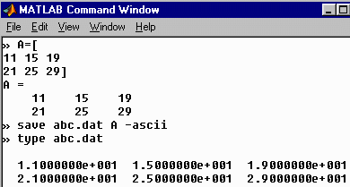
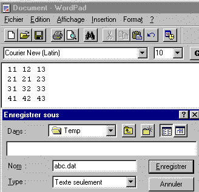
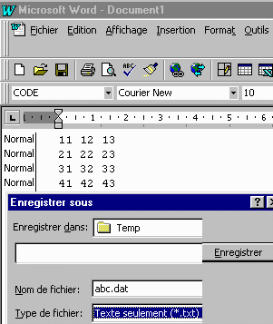
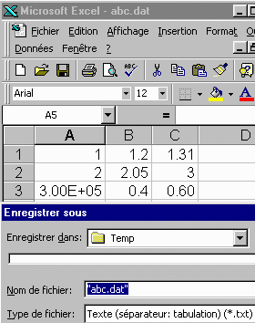
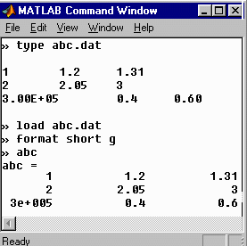

Pour créer un fichier de données, utiliser l'éditeur de Matlab.
On peut aussi employer des logiciels permettant de créer des fichiers uniquement en ASCII : Bloc-notes, WordPad, Word, Excel, ou un système d'acquisition de données.
Exemple :


Note : l'extension .dat signifie « data » et elle n'est pas obligatoire. L'extension *.txt convient également. Cependant, elle est surtout utilisée pour indiquer que le fichier contient du texte.
L'extension indique l'application à utiliser avec le fichier. Exemple :
L'instruction save de Matlab permet de faire la sauvegarde des valeurs
contenues dans les variables.
Exemple :

Faire help save pour le détail de la procédure.
Il faut spécifier Texte seulement dans la fenêtre.
Exemple :

On peut utiliser Word de la même manière que WordPad.
Exemple :

Le logiciel Excel permet également d'effectuer la sauvegarde dans un mode
ASCII. Le style des nombres dans chacune des cellules est reproduit dans le
fichier.
Exemple :

Voici le résultat dans Matlab :
